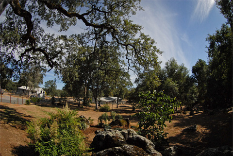

About Big Leap Ranch

Big Leap Ranch breeds AMHA and AMHR registered Miniature Horses. The ranch is located in the heart of the California Gold Country, close to the historic gold rush towns of Nevada City and Grass Valley. Big Leap Ranch is owned and operated by lifelong equestrienne Janice Kieler.
Janice’s life has been filled with horses since the age of seven. In her teens, she competed in hunter and jumper events throughout the United States. At one competition, an international judge in dressage took notice of Janice. His influence changed her passion to the art of dressage. The next forty years were spent riding, training, and competing with German Warmbloods to the highest international dressage standard – the Grand Prix. Over the years, Janice earned many national titles and was long listed for United States international dressage teams during the years from 1980 to 1984.
Later in life, Janice’s granddaughter also developed an interest in horses. As an infant, she loved to run to the stables and admire the horses; but she was always afraid to approach them or touch them. It was obvious their huge stature frightened her. Something had to be done to nurture her love of these magnificent horses. Janice purchased a Miniature Horse with the hope it would solve the problem. Indeed, it did! Soon Janice was taken by the unique and charismatic nature of these small horses. Thus began her fascination with the Miniature Horse. The change from competing with 1700 pound Warmbloods to the Miniature Horses was a big leap, and that became the inspiration for the name Big Leap Ranch.
Years of high level competition taught Janice the importance of bloodlines. Some bloodlines produce better competitors than others. Also, competition reveals the inner character of the horse; its ability and desire to perform. At Big Leap Ranch, not only the stallion must have a strong pedigree and have competed well, the mares must also meet these high standards. The majority of the mares at Big Leap Ranch have competed well, and their ancestors are champions, or produced champions, or both. It takes both a strong sire line, and an equally strong dam line, to create a foal with the ability or potential to be a winner in the show ring and later produce winners too.
Whether you are looking for a show horse, a new companion, or want to begin your own breeding program, you are invited to consider the Miniature Horses from Big Leap Ranch.